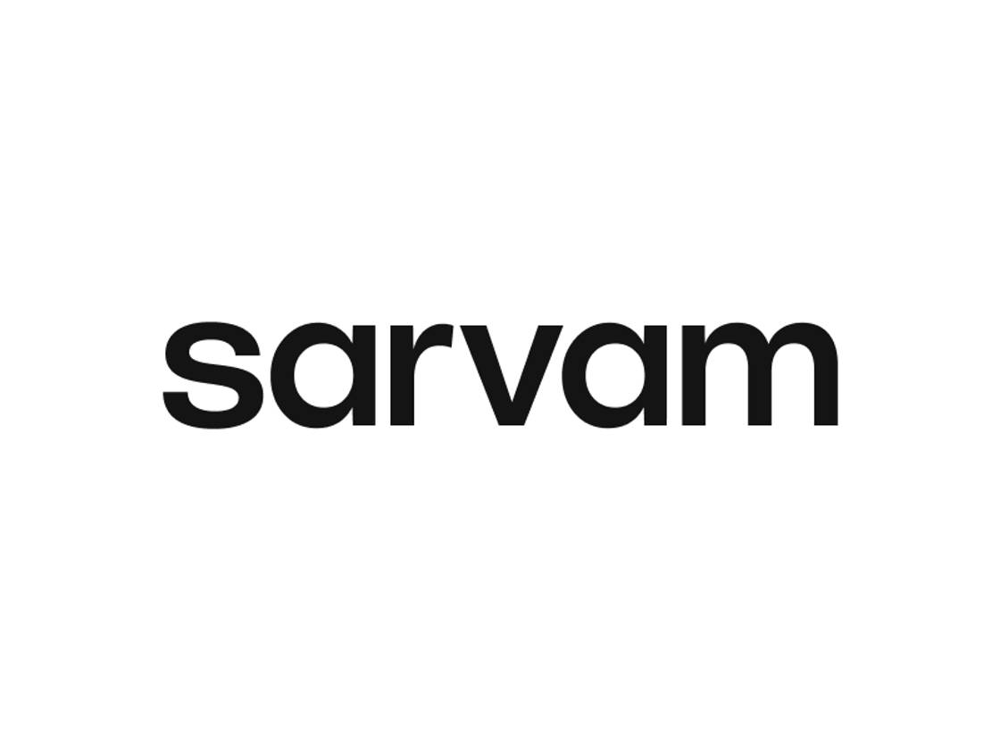

Workflow Automation
Connect email, PDFs, Excel, hospital information systems, CRM and ERP into one AI-assisted workflow.
Multi-step automation · Human approval gatesGive your hospital staff more time for patients. We build AI agents and intelligent workflows that take care of the repetitive front-desk and back-office work.
Identify the department. Check availability. Draft a reply.
Built with leading
AI technologies

Start with the work that slows you down. We’ll build the right system around your people, your data, and your existing tools.
Connect email, PDFs, Excel, hospital information systems, CRM and ERP into one AI-assisted workflow.
Multi-step automation · Human approval gatesInternal and customer-facing agents that can retrieve, reason, draft, act and escalate.
Patient helpdesk agents · Staff knowledge assistantsTurn unstructured business documents into structured, searchable, actionable information.
Insurance & TPA claim documents · Document Q&AUse historical data for forecasting, scoring, prioritisation and anomaly detection.
Bed & OPD demand forecasting · Appointment no-show predictionUse images and video to detect objects, defects, events and process deviations.
Visual inspection · Detection systemsVoice assistants for appointment booking, reminders, follow-up and patient support in Indian languages.
Inbound / outbound flows · CRM hand-offExplore where AI can help.
Patient enquiries, appointment booking and reminders, insurance and TPA claim documents, bed and OPD demand forecasting.
RFQ automation, quality intelligence, service copilots, forecasting.
Document analysis, credit support, collections prioritisation, risk models.
POD automation, customer updates, route intelligence, maintenance analytics.
Lead qualification, follow-up automation, CRM intelligence, voice agents.
Order capture, quotation automation, inventory intelligence, customer service.
Knowledge assistants, document review, reporting and workflow automation.
Have a conversation about your hospital or business. See what an AI assistant can bring to the everyday.
Live AI assistants. Messages and audio are processed by our AI providers. Please do not share patient details or other sensitive information.
Text chat uses OpenAI. Voice combines Sarvam AI’s speech and language models with LiveKit’s real-time audio. Python and FastAPI connect the services; SQLite manages daily chat usage limits.
A 90-second AI conversation using your microphone. Audio is processed by our voice providers. You can interrupt or end the call anytime.
Before choosing the technology, understand the opportunity. Estimate what one repetitive task costs your team each month.
Map the workflow, people, systems, data and cost of the current problem.
Build the smallest proof that demonstrates feasibility and business value.
Connect the solution to business systems with approvals, controls and monitoring.
Track time saved, errors reduced, response times and other agreed business KPIs.
Tell us what keeps your team busy.
We’ll help you see what’s possible.